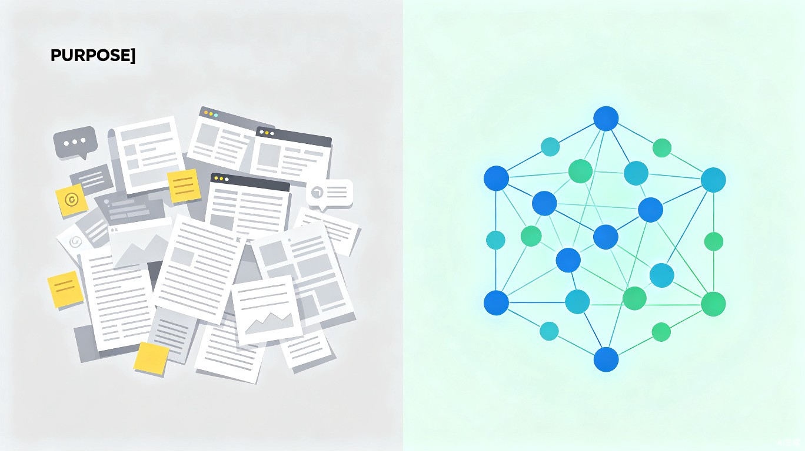

创意名称 + 创意介绍
🔍想解决什么问题
当代学习者和职场人每天被海量信息淹没——刷过的文章、听过的课程、开会时的灵感、阅读时的批注，散落在微信、飞书、浏览器、笔记软件等多个应用里，最终全部被遗忘。
💡为什么会想到做这个
灵感来自我自己的真实经历——收藏了上百篇干货文章，却从来不会回看；参加了无数场线上分享，笔记记完就吃灰。每次想调用某个知识点时，只记得"好像在哪里看过"，却怎么也找不到。
这种"知道但找不到"的无力感，相信每个知识工作者都深有体会。TRAE 大赛的 slogan"世界很大，放手去造"提醒我：与其被动接受信息爆炸，不如主动造一个工具把碎片重新拼起来。
💻大概是什么产品
一款 AI 驱动的碎片知识结构化 Web 应用（网页/小程序形态），能够自动聚合、关联、可视化呈现用户散落在各处的碎片化信息，将其转化为可检索、可追溯、可复用的个人知识图谱。
目标用户及痛点
👥面向哪些用户
核心用户群体是 20-35 岁的知识工作者和终身学习者——包括：
- 大学生（考研/考证备考，需要系统化整理学科知识）
- 职场新人（快速学习业务知识，搭建领域认知框架）
- 内容创作者（素材管理与灵感沉淀，构建个人素材库）
- 产品经理、运营、咨询师（持续跨领域学习，整合多源信息）
📍在什么场景下使用
- 每天阅读公众号、知识社区、行业报告后，一键将精彩段落和核心观点收录进"知谱"
- 开会/上课/听播客时随手记录灵感碎片，系统自动识别并关联到已有知识节点
- 需要撰写报告、准备演讲或复习备考时，通过关键词或语义搜索，快速调取所有相关知识点及其关联脉络
- 定期回顾时，通过知识图谱的可视化展示，发现自己认知结构的盲区和薄弱环节
😢当前痛点
如果没有"知谱"，用户现在的处境是——

价值与意义
效率提升
将信息"收藏-遗忘"的无效循环，转变为"输入-关联-复用"的高效知识工作流。预估可将知识检索效率提升 5-10 倍。
商业价值
面向知识密集型团队提供企业版，支持多人知识库共建与团队认知资产沉淀。
社会价值
帮助更多人从"被动消费信息"转向"主动构建知识"，真正实现终身学习的价值。
🚀效率提升详解
用户不需要改变任何现有阅读和记录习惯，AI 在后台自动完成结构化处理。你的每一次收藏、每一条笔记、每一个灵感，都会被自动解析、标注主题、建立关联，形成一张持续生长的个人知识网络。
💰商业前景
可面向咨询公司、研究机构、高校实验室等知识密集型团队提供企业版，支持多人知识库共建与团队认知资产沉淀；也可与知识付费平台、在线教育机构合作，为用户提供"学完能留住"的增值服务。
🌱社会价值
在信息爆炸的时代，帮助更多人从"被动消费信息"转向"主动构建知识"，真正实现终身学习的价值——不只是"学过了"，而是"学到了、用得上、忘不掉"。
创意产物
⚡ 产品原型开发中
基于 TRAE 平台，知谱（KnowFlow）正在快速迭代产品原型。核心功能模块包括：多端信息采集插件、AI 语义理解与自动标签、知识图谱可视化引擎、以及智能检索与关联推荐系统。
敬请期待 Demo 演示与内测版本发布。